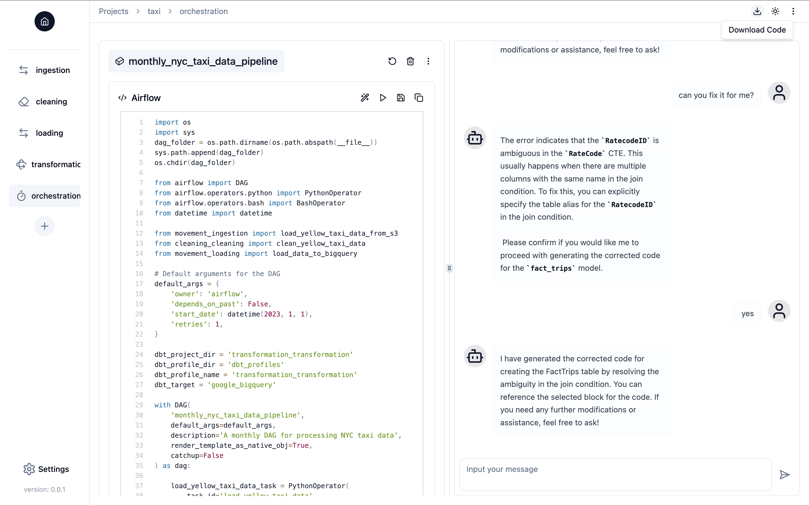
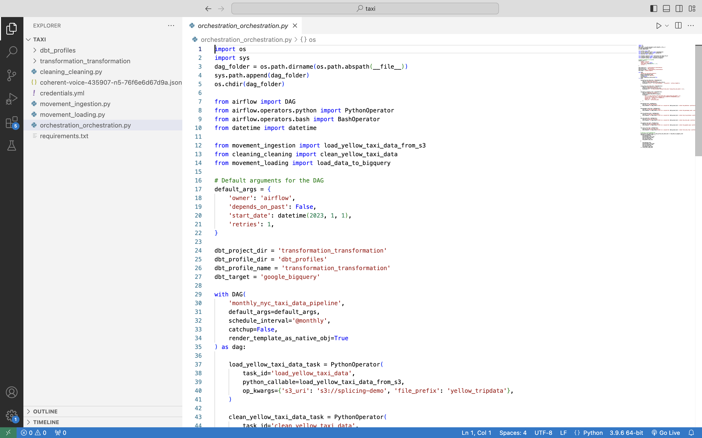
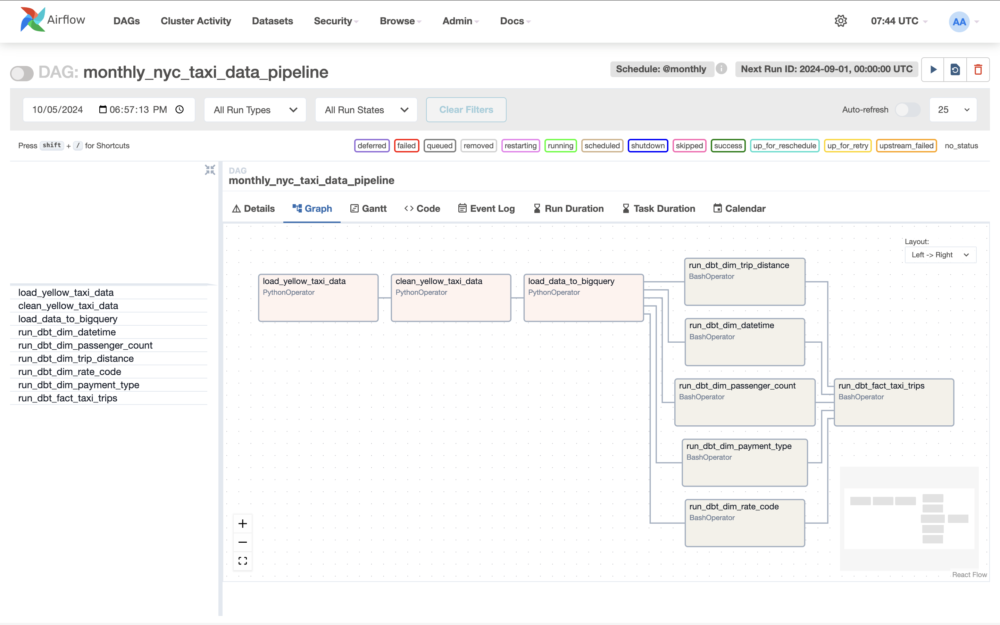

Introduction
Splicing is an open-source AI copilot for effortless data pipeline building. It offers the following key features:
- Notebook-style interface with chat capabilities in a web UI: Work on your data pipelines in a familiar Jupyter notebook interface, while the AI copilot assists and guides you by generating, executing, and debugging data engineering code throughout the process.
- No vendor lock-in: Build your data pipelines with any data stack of your choice, and select the LLM you prefer for your copilot, with full flexibility.
- Fully customizable: Break down your pipeline into multiple components—such as data movement, transformation, and more—and tailor each component to your specific needs. Splicing then seamlessly assembles these components into a complete, functional data pipeline.
- Secure and manageable: Host Splicing on your own infrastructure, with full control over your data and LLMs. Your data and secret keys are never shared with LLM providers at any time.
Feature Highlights
Generate Code with Conversations
Interact with Splicing Copilot to generate code seamlessly through natural language conversations.
Edit and Execute Code
Modify your code within an interactive environment, similar to Jupyter notebooks, and execute it directly.
Debug Code
Request Splicing Copilot to debug your code and help identify and fix issues efficiently.
Connect Pipeline Components and Recommend Data Engineering Techniques
When building a data pipeline, each component operates on the context and data from the previous one. Splicing Copilot understands this flow and recommends optimal data engineering techniques based on your pipeline's context.
Export Code Ready for Deployment
Download code for your data pipeline in a single click, optimized and ready for deployment.
Download Code

Code Structure

Ready for Deployment

End-to-end Demo
The following video demonstrates how to use Splicing to build an end-to-end NYC taxi data pipeline: